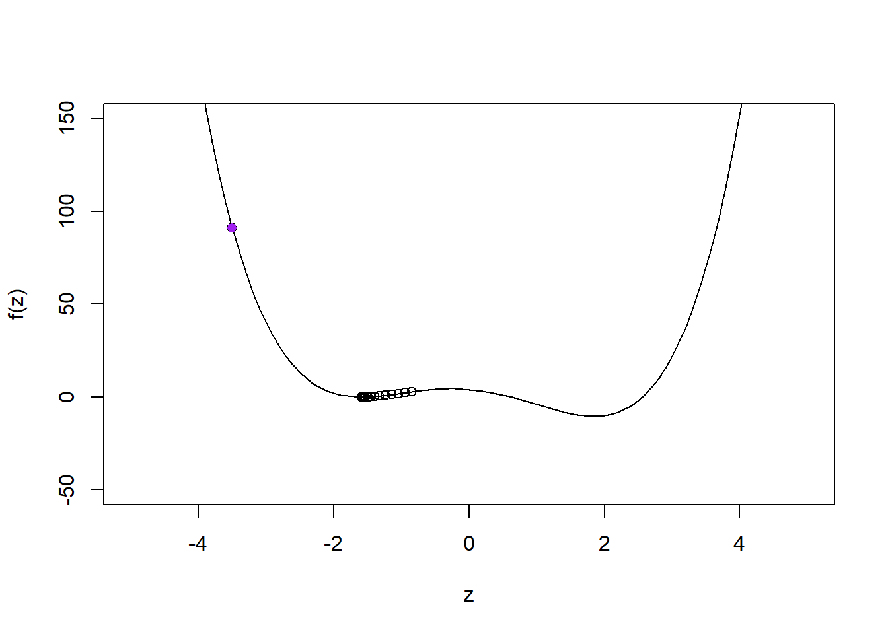
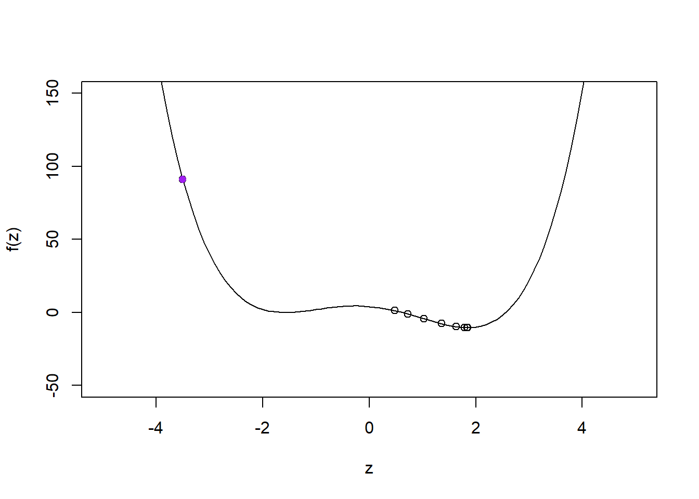

The following package(s) will be installed:
- broom [1.0.5]
- car [3.1-2]
- caret [6.0-94]
- corrplot [0.92]
- dplyr [1.1.4]
- nnet [7.3-19]
- purrr [1.0.2]
- readr [2.1.5]
- stringr [1.5.1]
- tidyr [1.3.1]
- torch [0.12.0]
These packages will be installed into "~/hw4/renv/library/R-4.3/x86_64-w64-mingw32".
# Installing packages --------------------------------------------------------
- Installing dplyr ... OK [linked from cache]
- Installing readr ... OK [linked from cache]
- Installing purrr ... OK [linked from cache]
- Installing stringr ... OK [linked from cache]
- Installing tidyr ... OK [linked from cache]
- Installing corrplot ... OK [linked from cache]
- Installing nnet ... OK [linked from cache]
- Installing broom ... OK [linked from cache]
- Installing car ... OK [linked from cache]
- Installing caret ... OK [linked from cache]
- Installing torch ... OK [linked from cache]
Successfully installed 11 packages in 95 milliseconds.
sapply(packages, require, character.only=T)
Loading required package: dplyr
Attaching package: 'dplyr'
The following objects are masked from 'package:stats':
filter, lag
The following objects are masked from 'package:base':
intersect, setdiff, setequal, union
Loading required package: readr
Loading required package: tidyr
Loading required package: purrr
Loading required package: stringr
Warning: package 'stringr' was built under R version 4.3.2
Loading required package: corrplot
Warning: package 'corrplot' was built under R version 4.3.2
corrplot 0.92 loaded
Loading required package: car
Warning: package 'car' was built under R version 4.3.2
Loading required package: carData
Warning: package 'carData' was built under R version 4.3.2
Attaching package: 'car'
The following object is masked from 'package:purrr':
some
The following object is masked from 'package:dplyr':
recode
Loading required package: caret
Warning: package 'caret' was built under R version 4.3.2
Loading required package: ggplot2
Loading required package: lattice
Attaching package: 'caret'
The following object is masked from 'package:purrr':
lift
Loading required package: torch
Warning: package 'torch' was built under R version 4.3.2
Using your answer from above, what is the answer to \[
\frac{d}{dx}g(x, y) \Bigg|_{(x=3, y=4)} \quad \text{and} \quad \frac{d}{dy}g(x, y) \Bigg|_{(x=3, y=4)} ?
\]
Define \(g(x, y)\) as a function in R, compute the gradient of \(g(x, y)\) with respect to \(x=3\) and \(y=4\). Does the answer match what you expected?
install.packages("numDeriv")
The following package(s) will be installed:
- numDeriv [2016.8-1.1]
These packages will be installed into "~/hw4/renv/library/R-4.3/x86_64-w64-mingw32".
# Installing packages --------------------------------------------------------
- Installing numDeriv ... OK [linked from cache]
Successfully installed 1 package in 14 milliseconds.
library(numDeriv)equation <-function(point) { x <- point[1] y <- point[2]return((x -3)^2+ (y -4)^2)}grad(equation, c(3, 4))
[1] 0 0
The answer came out as i expected because the gradient would result in 2(x-3) for the partial diff for x and 2(y-4) for y and when we calc it with the respect for x and y we get <0,0>
Define \(h(\u, \v)\) as a function in R, initialize the two vectors \(\u\) and \(\v\) as torch_tensors. Compute the gradient of \(h(\u, \v)\) with respect to \(\u\). Does the answer match what you expected?
install.packages("torch")
The following package(s) will be installed:
- torch [0.12.0]
These packages will be installed into "~/hw4/renv/library/R-4.3/x86_64-w64-mingw32".
# Installing packages --------------------------------------------------------
- Installing torch ... OK [linked from cache]
Successfully installed 1 package in 13 milliseconds.
Consider the following function \[
f(z) = z^4 - 6z^2 - 3z + 4
\]
Derive the expression for \[
f'(z_0) = \frac{df}{dz}\Bigg|_{z=z_0}
\] and evaluate \(f'(z_0)\) when \(z_0 = -3.5\).
Define \(f(z)\) as a function in R, and using the torch library compute \(f'(-3.5)\).
install.packages("numDeriv")
The following package(s) will be installed:
- numDeriv [2016.8-1.1]
These packages will be installed into "~/hw4/renv/library/R-4.3/x86_64-w64-mingw32".
# Installing packages --------------------------------------------------------
- Installing numDeriv ... OK [linked from cache]
Successfully installed 1 package in 14 milliseconds.
Plot the curve \(f\) and add taking \(\eta = 0.02\), add the points \(\{z_0, z_1, z_2, \dots z_{100}\}\) obtained using gradient descent to the plot. What do you observe?
gradient_descent <-function(f, f_prime, z_0, eta, n) { z_v <-numeric(n) z_v[1] <- z_0for (i in2:n) { z_v[i] <- z_v[i -1] - eta *f_prime(z_v[i -1]) }return(z_v)}z_0 <--3.5eta <-0.02n <-100z_v <-gradient_descent(fz, f_p, z_0, eta, n)curve(fz, from =-5, to =5, ylim =c(-50, 150), xlab ="z", ylab ="f(z)")points(z_v, fz(z_v))points(z_0, fz(z_0), col ="purple", pch =16)

In the plot we can see that the inital point starts around f(z):100 and z:-3.5 and we see that the points marked during the decent are focused around f(z):0 and -2< z <-0.5
1.5 (5 points)
Redo the same analysis as Question 1.4, but this time using \(\eta = 0.03\). What do you observe? What can you conclude from this analysis
gradient_descent <-function(f, f_prime, z_0, eta, n) { z_v <-numeric(n) z_v[1] <- z_0for (i in2:n) { z_v[i] <- z_v[i -1] - eta *f_prime(z_v[i -1]) }return(z_v)}z_0 <--3.5eta <-0.03n <-100z_v <-gradient_descent(fz, f_p, z_0, eta, n)curve(fz, from =-5, to =5, ylim =c(-50, 150), xlab ="z", ylab ="f(z)")points(z_v, fz(z_v))points(z_0, fz(z_0), col ="purple", pch =16)

I can conclude that as η changes the gradient descent points also changes
—
Question 2
50 points
Logistic regression and interpretation of effect sizes
For this question we will use the Titanic dataset from the Stanford data archive. This dataset contains information about passengers aboard the Titanic and whether or not they survived.
2.1 (5 points)
Read the data from the following URL as a tibble in R. Preprocess the data such that the variables are of the right data type, e.g., binary variables are encoded as factors, and convert all column names to lower case for consistency. Let’s also rename the response variable Survival to y for convenience.
Fit a logistic regression model to predict the probability of surviving the titanic as a function of:
pclass
sex
age
fare
# siblings
# parents
full_model <-glm(y ~ pclass + sex + age + fare + siblings.spouses.aboard + parents.children.aboard,data = df,family = binomial)summary(full_model)
Call:
glm(formula = y ~ pclass + sex + age + fare + siblings.spouses.aboard +
parents.children.aboard, family = binomial, data = df)
Coefficients:
Estimate Std. Error z value Pr(>|z|)
(Intercept) 5.297252 0.557409 9.503 < 2e-16 ***
pclass -1.177659 0.146079 -8.062 7.52e-16 ***
sexmale -2.757282 0.200416 -13.758 < 2e-16 ***
age -0.043474 0.007723 -5.629 1.81e-08 ***
fare 0.002786 0.002389 1.166 0.243680
siblings.spouses.aboard -0.401831 0.110712 -3.630 0.000284 ***
parents.children.aboard -0.106505 0.118588 -0.898 0.369127
---
Signif. codes: 0 '***' 0.001 '**' 0.01 '*' 0.05 '.' 0.1 ' ' 1
(Dispersion parameter for binomial family taken to be 1)
Null deviance: 1182.77 on 886 degrees of freedom
Residual deviance: 780.93 on 880 degrees of freedom
AIC: 794.93
Number of Fisher Scoring iterations: 5
2.4 (30 points)
Provide an interpretation for the slope and intercept terms estimated in full_model in terms of the log-odds of survival in the titanic and in terms of the odds-ratio (if the covariate is also categorical).
The intercept means that the log odds of survival for a particular passenger is about 5.297252
the slope term estimates mean the change of log odds of survival for a variable and it differs from variable to variable such as the odds of survival depending on how much a person paid for a ticket and their age
the odds ratio means the change in the odds between 2 different groups for example within the age variable there should be a difference between the odds of survival if you’re over 65 and if you’re under 18 and there should be a difference within the sex variable meaning a difference of survival odds between males and females
Recall the definition of logistic regression from the lecture notes, and also recall how we interpreted the slope in the linear regression model (particularly when the covariate was categorical).
—
Question 3
70 points
Variable selection and logistic regression in torch
3.1 (15 points)
Complete the following function overview which takes in two categorical vectors (predicted and expected) and outputs:
Using backward-stepwise logistic regression, find a parsimonious altenative to full_model, and print its overview
step_model <-step(full_model, direction ="backward")
Start: AIC=794.93
y ~ pclass + sex + age + fare + siblings.spouses.aboard + parents.children.aboard
Df Deviance AIC
- parents.children.aboard 1 781.75 793.75
- fare 1 782.43 794.43
<none> 780.93 794.93
- siblings.spouses.aboard 1 796.85 808.85
- age 1 815.81 827.81
- pclass 1 847.84 859.84
- sex 1 1021.33 1033.33
Step: AIC=793.75
y ~ pclass + sex + age + fare + siblings.spouses.aboard
Df Deviance AIC
- fare 1 782.88 792.88
<none> 781.75 793.75
- siblings.spouses.aboard 1 801.59 811.59
- age 1 816.44 826.44
- pclass 1 852.19 862.19
- sex 1 1025.55 1035.55
Step: AIC=792.88
y ~ pclass + sex + age + siblings.spouses.aboard
Df Deviance AIC
<none> 782.88 792.88
- siblings.spouses.aboard 1 801.61 809.61
- age 1 818.41 826.41
- pclass 1 900.80 908.80
- sex 1 1031.86 1039.86
summary(step_model)
Call:
glm(formula = y ~ pclass + sex + age + siblings.spouses.aboard,
family = binomial, data = df)
Coefficients:
Estimate Std. Error z value Pr(>|z|)
(Intercept) 5.532066 0.504750 10.960 < 2e-16 ***
pclass -1.265129 0.127021 -9.960 < 2e-16 ***
sexmale -2.736487 0.195730 -13.981 < 2e-16 ***
age -0.043697 0.007695 -5.679 1.36e-08 ***
siblings.spouses.aboard -0.407770 0.105197 -3.876 0.000106 ***
---
Signif. codes: 0 '***' 0.001 '**' 0.01 '*' 0.05 '.' 0.1 ' ' 1
(Dispersion parameter for binomial family taken to be 1)
Null deviance: 1182.77 on 886 degrees of freedom
Residual deviance: 782.88 on 882 degrees of freedom
AIC: 792.88
Number of Fisher Scoring iterations: 5
step_predictions <-ifelse(predict(step_model, type ="response") >0.5, 1, 0)summary(step_predictions)
Min. 1st Qu. Median Mean 3rd Qu. Max.
0.0000 0.0000 0.0000 0.3551 1.0000 1.0000
3.4 (15 points)
Using the caret package, setup a \(5\)-fold cross-validation training method using the caret::trainConrol() function
library(caret)controls <-trainControl(method ="cv", number =5)
Now, using control, perform \(5\)-fold cross validation using caret::train() to select the optimal \(\lambda\) parameter for LASSO with logistic regression.
Take the search grid for \(\lambda\) to be in \(\{ 2^{-20}, 2^{-19.5}, 2^{-19}, \dots, 2^{-0.5}, 2^{0} \}\).
# Insert your code in the ... regionlasso_fit <-train(x = df[, c("pclass", "age", "siblings.spouses.aboard", "parents.children.aboard", "fare")], y = df$y, method ="glmnet",trControl = controls, tuneGrid =expand.grid(alpha =1,lambda =2^seq(-20, 0, by =0.5) ),family ="binomial")lasso_fit
glmnet
887 samples
5 predictor
2 classes: '0', '1'
No pre-processing
Resampling: Cross-Validated (5 fold)
Summary of sample sizes: 710, 710, 709, 710, 709
Resampling results across tuning parameters:
lambda Accuracy Kappa
9.536743e-07 0.7012379 0.3328278
1.348699e-06 0.7012379 0.3328278
1.907349e-06 0.7012379 0.3328278
2.697398e-06 0.7012379 0.3328278
3.814697e-06 0.7012379 0.3328278
5.394797e-06 0.7012379 0.3328278
7.629395e-06 0.7012379 0.3328278
1.078959e-05 0.7012379 0.3328278
1.525879e-05 0.7012379 0.3328278
2.157919e-05 0.7012379 0.3328278
3.051758e-05 0.7012379 0.3328278
4.315837e-05 0.7012379 0.3328278
6.103516e-05 0.7012379 0.3328278
8.631675e-05 0.7012379 0.3328278
1.220703e-04 0.7012379 0.3328278
1.726335e-04 0.7012379 0.3328278
2.441406e-04 0.7012379 0.3328278
3.452670e-04 0.7012379 0.3328278
4.882812e-04 0.7012379 0.3328278
6.905340e-04 0.7012379 0.3328278
9.765625e-04 0.7012379 0.3328278
1.381068e-03 0.7001079 0.3297930
1.953125e-03 0.6989780 0.3268197
2.762136e-03 0.7023678 0.3341293
3.906250e-03 0.7012506 0.3307077
5.524272e-03 0.7023805 0.3328530
7.812500e-03 0.7046277 0.3364004
1.104854e-02 0.7012379 0.3260707
1.562500e-02 0.7034851 0.3308116
2.209709e-02 0.7012379 0.3243776
3.125000e-02 0.7080112 0.3369704
4.419417e-02 0.6978607 0.3158997
6.250000e-02 0.6787025 0.2714369
8.838835e-02 0.6460293 0.1468299
1.250000e-01 0.6144353 0.0000000
1.767767e-01 0.6144353 0.0000000
2.500000e-01 0.6144353 0.0000000
3.535534e-01 0.6144353 0.0000000
5.000000e-01 0.6144353 0.0000000
7.071068e-01 0.6144353 0.0000000
1.000000e+00 0.6144353 0.0000000
Tuning parameter 'alpha' was held constant at a value of 1
Accuracy was used to select the optimal model using the largest value.
The final values used for the model were alpha = 1 and lambda = 0.03125.
Using the information stored in lasso_fit$results, plot the results for cross-validation accuracy vs. \(log_2(\lambda)\). Choose the optimal \(\lambda^*\), and report your results for this value of \(\lambda^*\).
results_df <- lasso_fit$resultsplot(results_df$lambda, results_df$Accuracy, xlab ="log2(lambda)", ylab ="accuracy", main ="accuracy vs log2_lamda")
Now, define the loss function Loss() which takes in two tensors X and y and a function Fun, and outputs the Binary cross Entropy loss between Fun(X) and y.
Loss <-function(X, y, Fun) { linear <-torch_addmm(Fun$g, X, Fun$f) output <-torch_sigmoid(linear) loss <-nn_bce_loss()(output, y)return(loss)}
Initialize an optimizer using optim_adam() and perform \(n=1000\) steps of gradient descent in order to fit logistic regression using torch.
f <-logistic()optimizer <-optim_adam(list(f$f, f$g), lr =0.01) # Insert your code heren_steps <-1000for (i in1:n_steps) { optimizer$zero_grad() loss <-Loss(X, y, f) loss$backward() optimizer$step()if (i %%100==0) {cat('Step:', i, 'Loss:', as.array(loss), '\n') }}
Create a summary table of the overview() summary statistics for each of the \(4\) models we have looked at in this assignment, and comment on their relative strengths and drawbacks.
overview(predicted,expected)#high accuracy and low false negative rates but acceptable error and high false positive rate